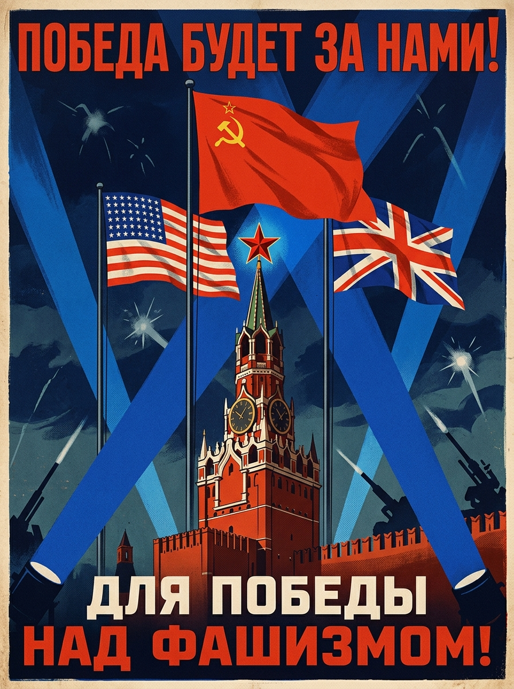
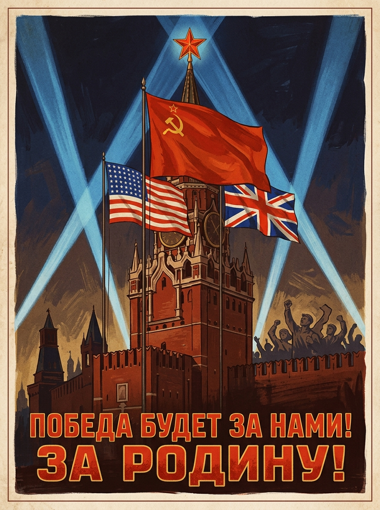
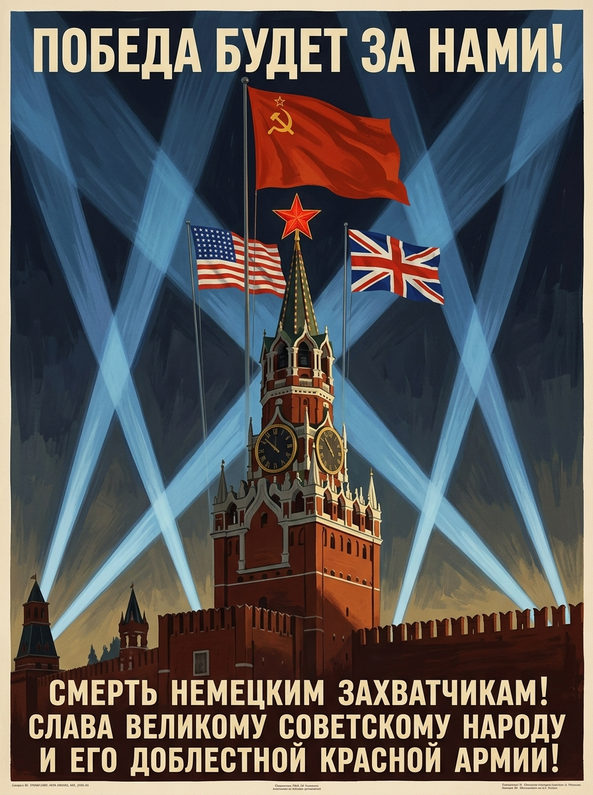
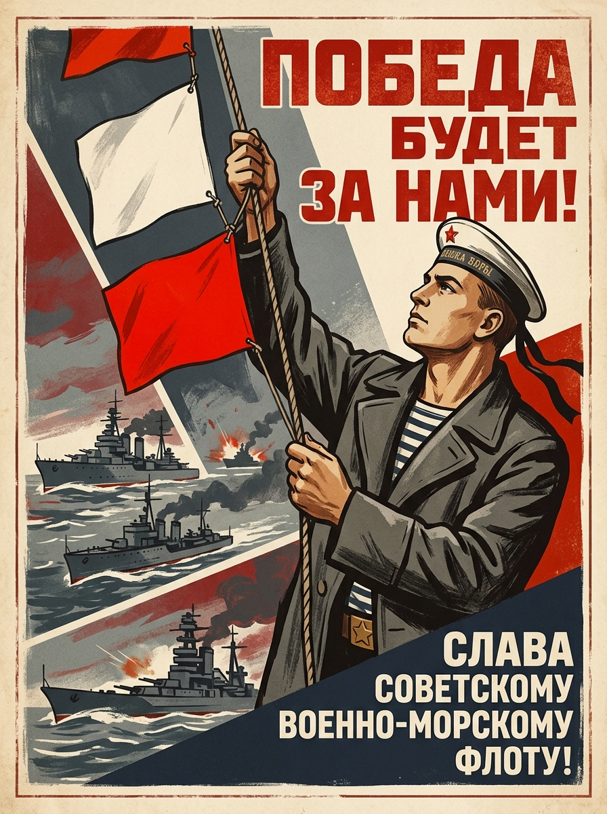
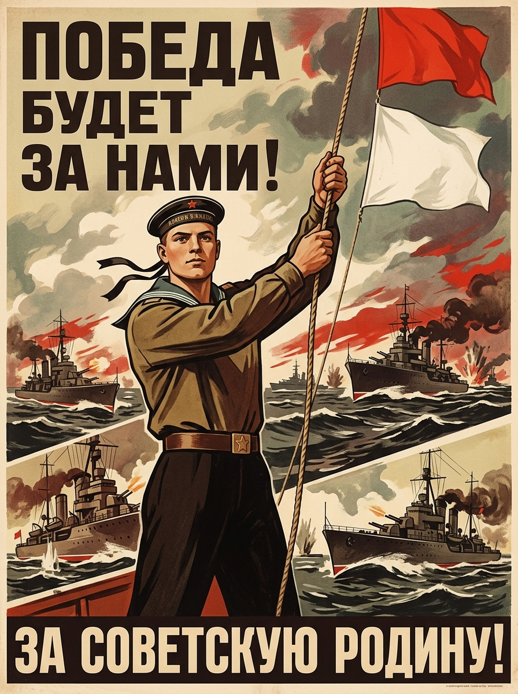
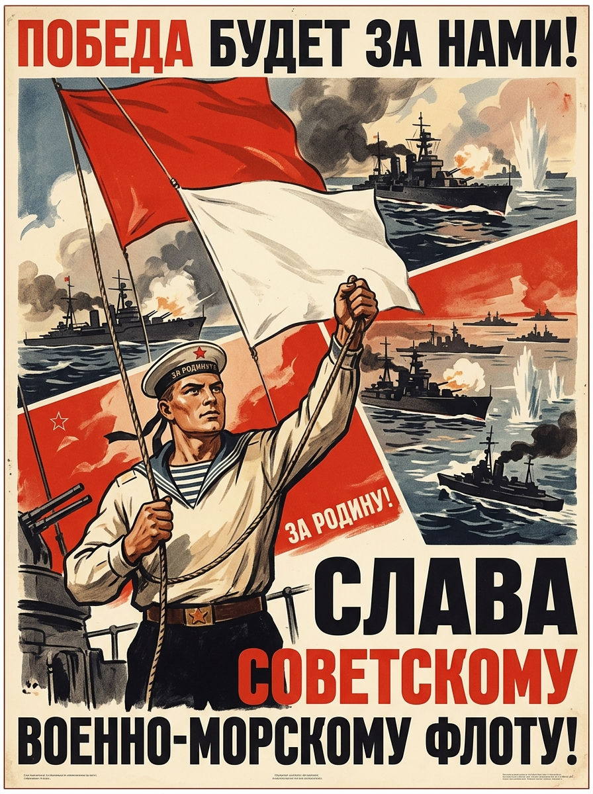
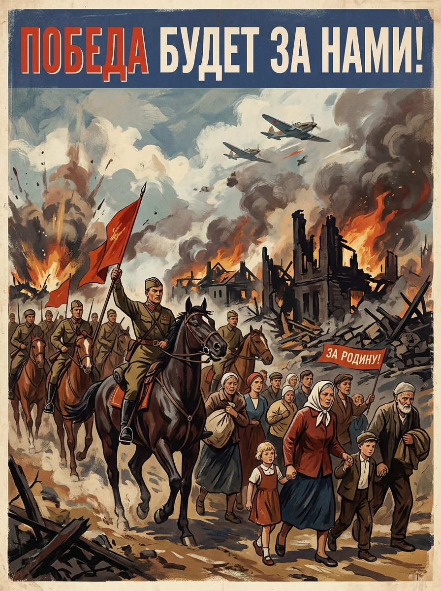
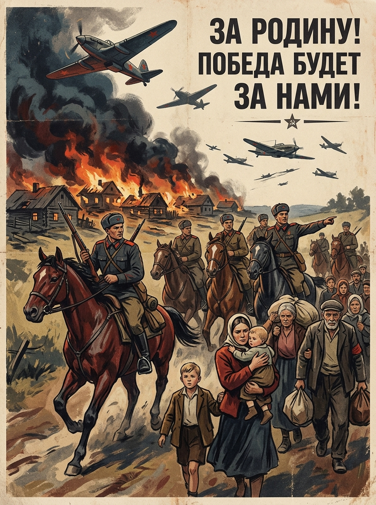
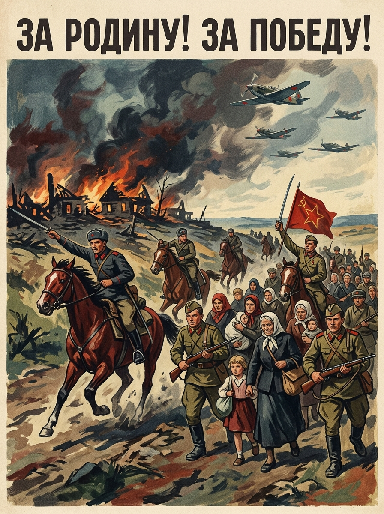

track1_0803
A Socialist Realism propaganda poster with the Soviet, American, and British flags flying above a Kremlin tower crowned by a red star, framed by dramatic blue searchlight beams, bold Russian text, and a solemn wartime color palette.




展开 provider prompts
aas_safe
Create a single finished artwork image for an art-generation challenge. CAPTION TO SATISFY A Socialist Realism propaganda poster with the Soviet, American, and British flags flying above a Kremlin tower crowned by a red star, framed by dramatic blue searchlight beams, bold Russian text, and a solemn wartime color palette. OUTPUT BOUNDARY - The output is the artwork itself, not a gallery/photo/mockup/catalog presentation. - Make it clearly legible and fully filled by the artwork surface. - Do not add sample IDs, filenames, watermarks, UI labels, captions, or explanation text. REFERENCE-GUIDED CONTENT PLAN Must include: - A Socialist Realism propaganda poster with the Soviet, American, and British flags flying above a Kremlin tower crowned by a red star, framed by dramatic blue searchlight beams, bold Russian text, and a solemn wartime color palette Factual anchors: - Kremlin tower silhouette with a red star crown, not a generic castle, cathedral, or Western clock tower. - Use a Red Square/Kremlin poster cue: red brick tower, crenellated wall, and star-topped spire. - Dramatic blue searchlight beams frame the tower. - Soviet, American, and British flags fly above the Kremlin tower as the caption states. - Soviet flag is largest and visually dominant, closest to the Kremlin red star. - American and British flags are smaller allied flags flanking the Soviet flag. - Do not place the American flag as the central or dominant flag. Surface contract: - Output must be the artwork surface itself, not a gallery photograph or photographed object. - Poster means a flat clearly legible printed artwork; internal margins and printed border lines are allowed. - Use a full-bleed flat poster surface with no external presentation area. Logic-anchor variant: - Resolve physical relations before decoration: figures, vehicles, flags, windows, and symbols must have coherent contact points and action direction. - Treat factual anchors and spatial logic as hard constraints, not style suggestions. - Keep only caption-requested symbols; do not substitute extra flags, emblems, walls, frames, or unrelated text blocks. Flat-poster tight variant: - Fill the output with the period printed artwork artwork; natural artwork edges are allowed, but no surrounding table, wall, drop shadow, or scanned-page border. - Use only intentional headline/slogan typography requested by the caption; no tiny printer credits or footer microtext. - Keep the poster clearly legible with no perspective tilt, curled edge, hanging clip, or photographed-paper presentation. Defect-targeted variant: - Prefer varied figure scale and clear silhouettes over close-up hands, ropes, weapons, or flag details. - Use clear, selective, intentional text blocks; avoid tiny text, footer credits, hat text, document microtext, and edge labels. - Simplify local mechanics so hands, ropes, rifles, bayonets, flags, documents, vehicles, and panels have clean contact points. Text policy: - Include short Cyrillic/Russian-looking headline blocks only where the caption requests typography. - Prefer a few large legible-looking words over dense fake microtext. - Do not add Latin sample IDs, filenames, watermarks, or unrelated labels. Style policy: - Use composed artwork with clear large shapes and controlled flat color areas. - Use Socialist Realism poster language: heroic figures, idealized anatomy, bold diagonals, muted wartime palette. - Keep symbolic objects historically coherent; do not invent unrelated insignia. Must avoid: - gallery wall, museum installation, product mockup, catalog page, drop shadow, watermark, filename label - external photo frame, mat board, or wall-mounted display unless explicitly requested - realistic wall scene, poster hanging from clips, curled paper edge, or photographed poster - foreground soldiers, crowds, faces, hands, or human figures not requested by the caption - pistols, rifles, or weapons not requested by the caption - white presentation border, drop shadow, product mockup, or poster-on-page layout GENERATION PRIORITY 1. Exact caption semantics and requested objects. 2. Spatial/physical coherence of relations and surfaces. 3. Requested artistic style, brushwork, palette, composition, and emotional atmosphere. 4. Attractive final image quality. Produce only the image. TEXT AND FACTUAL ANCHORS - Text required: True; modes: cyrillic. Allowed text cues: - ПОБЕДА БУДЕТ ЗА НАМИ! - ЗА РОДИНУ! Text directives: - Use a few large intentional text blocks; keep them integrated into the artwork surface. - Prefer short, plausible text over dense fake microtext. - Do not add sample IDs, filenames, UI labels, watermarks, or tiny footer credits. Text must avoid: - footer microtext - sample ID or filename text - watermark or UI label - large malformed Cyrillic that changes the meaning of the main slogan Factual anchors: - Kremlin/Red Square imagery should read as red brick towers, crenellated walls, and a red star when requested. - Keep requested national flags distinct; do not invent unrelated flag hybrids. DISTRIBUTION-AWARE ART DIRECTION - Keep the caption requirements and named symbols strict; use style variation only after the core scene is clear. - Preserve: caption content; landmark reference; requested text policy; relation logic. - Composition cues: red brick tower; searchlight; night scene. - Medium choices: propaganda poster print. - Allowed variation: aspect variation allowed; style variation allowed; crop variation allowed. - Poster support may remain visible when it helps the caption, but avoid a repeated stock layout. ASPECT AND CANVAS PLAN - Use a artwork surface; keep the full printed poster clearly legible and avoid left/right overflow. - Aspect label: portrait_poster; target canvas: 768x1024.
reference_style
Create a single finished artwork image for an art-generation challenge. CAPTION TO SATISFY A Socialist Realism propaganda poster with the Soviet, American, and British flags flying above a Kremlin tower crowned by a red star, framed by dramatic blue searchlight beams, bold Russian text, and a solemn wartime color palette. OUTPUT BOUNDARY - The output is the artwork itself, not a gallery/photo/mockup/catalog presentation. - Make it clearly legible and fully filled by the artwork surface. - Do not add sample IDs, filenames, watermarks, UI labels, captions, or explanation text. REFERENCE-GUIDED CONTENT PLAN Must include: - A Socialist Realism propaganda poster with the Soviet, American, and British flags flying above a Kremlin tower crowned by a red star, framed by dramatic blue searchlight beams, bold Russian text, and a solemn wartime color palette Factual anchors: - Kremlin tower silhouette with a red star crown, not a generic castle, cathedral, or Western clock tower. - Use a Red Square/Kremlin poster cue: red brick tower, crenellated wall, and star-topped spire. - Dramatic blue searchlight beams frame the tower. - Soviet, American, and British flags fly above the Kremlin tower as the caption states. - Soviet flag is largest and visually dominant, closest to the Kremlin red star. - American and British flags are smaller allied flags flanking the Soviet flag. - Do not place the American flag as the central or dominant flag. Surface contract: - Output must be the artwork surface itself, not a gallery photograph or photographed object. - Poster means a flat clearly legible printed artwork; internal margins and printed border lines are allowed. - Use a full-bleed flat poster surface with no external presentation area. Logic-anchor variant: - Resolve physical relations before decoration: figures, vehicles, flags, windows, and symbols must have coherent contact points and action direction. - Treat factual anchors and spatial logic as hard constraints, not style suggestions. - Keep only caption-requested symbols; do not substitute extra flags, emblems, walls, frames, or unrelated text blocks. Flat-poster tight variant: - Fill the output with the period printed artwork artwork; natural artwork edges are allowed, but no surrounding table, wall, drop shadow, or scanned-page border. - Use only intentional headline/slogan typography requested by the caption; no tiny printer credits or footer microtext. - Keep the poster clearly legible with no perspective tilt, curled edge, hanging clip, or photographed-paper presentation. Defect-targeted variant: - Prefer varied figure scale and clear silhouettes over close-up hands, ropes, weapons, or flag details. - Use clear, selective, intentional text blocks; avoid tiny text, footer credits, hat text, document microtext, and edge labels. - Simplify local mechanics so hands, ropes, rifles, bayonets, flags, documents, vehicles, and panels have clean contact points. Text policy: - Include short Cyrillic/Russian-looking headline blocks only where the caption requests typography. - Prefer a few large legible-looking words over dense fake microtext. - Do not add Latin sample IDs, filenames, watermarks, or unrelated labels. Style policy: - Use composed artwork with clear large shapes and controlled flat color areas. - Use Socialist Realism poster language: heroic figures, idealized anatomy, bold diagonals, muted wartime palette. - Keep symbolic objects historically coherent; do not invent unrelated insignia. Must avoid: - gallery wall, museum installation, product mockup, catalog page, drop shadow, watermark, filename label - external photo frame, mat board, or wall-mounted display unless explicitly requested - realistic wall scene, poster hanging from clips, curled paper edge, or photographed poster - foreground soldiers, crowds, faces, hands, or human figures not requested by the caption - pistols, rifles, or weapons not requested by the caption - white presentation border, drop shadow, product mockup, or poster-on-page layout GENERATION PRIORITY 1. Exact caption semantics and requested objects. 2. Spatial/physical coherence of relations and surfaces. 3. Requested artistic style, brushwork, palette, composition, and emotional atmosphere. 4. Attractive final image quality. Produce only the image. TEXT AND FACTUAL ANCHORS - Text required: True; modes: cyrillic. Allowed text cues: - ПОБЕДА БУДЕТ ЗА НАМИ! - ЗА РОДИНУ! Text directives: - Use a few large intentional text blocks; keep them integrated into the artwork surface. - Prefer short, plausible text over dense fake microtext. - Do not add sample IDs, filenames, UI labels, watermarks, or tiny footer credits. Text must avoid: - footer microtext - sample ID or filename text - watermark or UI label - large malformed Cyrillic that changes the meaning of the main slogan Factual anchors: - Kremlin/Red Square imagery should read as red brick towers, crenellated walls, and a red star when requested. - Keep requested national flags distinct; do not invent unrelated flag hybrids. DISTRIBUTION-AWARE ART DIRECTION - Match the reference family through medium, crop, density, color, brushwork, texture, and lighting while preserving caption logic. - Composition cues: red brick tower; searchlight; night scene. - Medium choices: propaganda poster print. - Allowed variation: aspect variation allowed; style variation allowed; crop variation allowed. - Poster support may remain visible when it helps the caption, but avoid a repeated stock layout. ASPECT AND CANVAS PLAN - Use a artwork surface; keep the full printed poster clearly legible and avoid left/right overflow. - Aspect label: portrait_poster; target canvas: 768x1024.
fid_diverse
Create a single finished artwork image for an art-generation challenge. CAPTION TO SATISFY A Socialist Realism propaganda poster with the Soviet, American, and British flags flying above a Kremlin tower crowned by a red star, framed by dramatic blue searchlight beams, bold Russian text, and a solemn wartime color palette. OUTPUT BOUNDARY - The output is the artwork itself, not a gallery/photo/mockup/catalog presentation. - Make it clearly legible and fully filled by the artwork surface. - Do not add sample IDs, filenames, watermarks, UI labels, captions, or explanation text. REFERENCE-GUIDED CONTENT PLAN Must include: - A Socialist Realism propaganda poster with the Soviet, American, and British flags flying above a Kremlin tower crowned by a red star, framed by dramatic blue searchlight beams, bold Russian text, and a solemn wartime color palette Factual anchors: - Kremlin tower silhouette with a red star crown, not a generic castle, cathedral, or Western clock tower. - Use a Red Square/Kremlin poster cue: red brick tower, crenellated wall, and star-topped spire. - Dramatic blue searchlight beams frame the tower. - Soviet, American, and British flags fly above the Kremlin tower as the caption states. - Soviet flag is largest and visually dominant, closest to the Kremlin red star. - American and British flags are smaller allied flags flanking the Soviet flag. - Do not place the American flag as the central or dominant flag. Surface contract: - Output must be the artwork surface itself, not a gallery photograph or photographed object. - Poster means a flat clearly legible printed artwork; internal margins and printed border lines are allowed. - Use a full-bleed flat poster surface with no external presentation area. Logic-anchor variant: - Resolve physical relations before decoration: figures, vehicles, flags, windows, and symbols must have coherent contact points and action direction. - Treat factual anchors and spatial logic as hard constraints, not style suggestions. - Keep only caption-requested symbols; do not substitute extra flags, emblems, walls, frames, or unrelated text blocks. Flat-poster tight variant: - Fill the output with the period printed artwork artwork; natural artwork edges are allowed, but no surrounding table, wall, drop shadow, or scanned-page border. - Use only intentional headline/slogan typography requested by the caption; no tiny printer credits or footer microtext. - Keep the poster clearly legible with no perspective tilt, curled edge, hanging clip, or photographed-paper presentation. Defect-targeted variant: - Prefer varied figure scale and clear silhouettes over close-up hands, ropes, weapons, or flag details. - Use clear, selective, intentional text blocks; avoid tiny text, footer credits, hat text, document microtext, and edge labels. - Simplify local mechanics so hands, ropes, rifles, bayonets, flags, documents, vehicles, and panels have clean contact points. Text policy: - Include short Cyrillic/Russian-looking headline blocks only where the caption requests typography. - Prefer a few large legible-looking words over dense fake microtext. - Do not add Latin sample IDs, filenames, watermarks, or unrelated labels. Style policy: - Use composed artwork with clear large shapes and controlled flat color areas. - Use Socialist Realism poster language: heroic figures, idealized anatomy, bold diagonals, muted wartime palette. - Keep symbolic objects historically coherent; do not invent unrelated insignia. Must avoid: - gallery wall, museum installation, product mockup, catalog page, drop shadow, watermark, filename label - external photo frame, mat board, or wall-mounted display unless explicitly requested - realistic wall scene, poster hanging from clips, curled paper edge, or photographed poster - foreground soldiers, crowds, faces, hands, or human figures not requested by the caption - pistols, rifles, or weapons not requested by the caption - white presentation border, drop shadow, product mockup, or poster-on-page layout GENERATION PRIORITY 1. Exact caption semantics and requested objects. 2. Spatial/physical coherence of relations and surfaces. 3. Requested artistic style, brushwork, palette, composition, and emotional atmosphere. 4. Attractive final image quality. Produce only the image. TEXT AND FACTUAL ANCHORS - Text required: True; modes: cyrillic. Allowed text cues: - ПОБЕДА БУДЕТ ЗА НАМИ! - ЗА РОДИНУ! Text directives: - Use a few large intentional text blocks; keep them integrated into the artwork surface. - Prefer short, plausible text over dense fake microtext. - Do not add sample IDs, filenames, UI labels, watermarks, or tiny footer credits. Text must avoid: - footer microtext - sample ID or filename text - watermark or UI label - large malformed Cyrillic that changes the meaning of the main slogan Factual anchors: - Kremlin/Red Square imagery should read as red brick towers, crenellated walls, and a red star when requested. - Keep requested national flags distinct; do not invent unrelated flag hybrids. DISTRIBUTION-AWARE ART DIRECTION - Avoid repeating a generic centered portrait-poster template; choose a less common crop, depth, figure scale, or viewpoint when the caption permits. - Keep required caption content, but let the artwork read as a natural historical artwork rather than a uniform generated layout. - Composition cues: red brick tower; searchlight; night scene. - Medium choices: propaganda poster print. - Allowed variation: aspect variation allowed; style variation allowed; crop variation allowed. ASPECT AND CANVAS PLAN - Use a artwork surface; keep the full printed poster clearly legible and avoid left/right overflow. - Aspect label: portrait_poster; target canvas: 768x1024.
track1_0077
A Socialist Realism Soviet naval propaganda poster with a sailor hoisting red and white flags before panels of warships and sea battles, using bold Cyrillic typography, patriotic red accents, and a solemn heroic composition.




展开 provider prompts
aas_safe
Create a single finished artwork image for an art-generation challenge. CAPTION TO SATISFY A Socialist Realism Soviet naval propaganda poster with a sailor hoisting red and white flags before panels of warships and sea battles, using bold Cyrillic typography, patriotic red accents, and a solemn heroic composition. OUTPUT BOUNDARY - The output is the artwork itself, not a gallery/photo/mockup/catalog presentation. - Make it clearly legible and fully filled by the artwork surface. - Do not add sample IDs, filenames, watermarks, UI labels, captions, or explanation text. REFERENCE-GUIDED CONTENT PLAN Must include: - A Socialist Realism Soviet naval propaganda poster with a sailor hoisting red and white flags before panels of warships and sea battles, using bold Cyrillic typography, patriotic red accents, and a solemn heroic composition - sailor hoisting red and white signal flags - two primary signal flags: one red and one white Spatial logic: - The sailor holds a believable hoisting line attached to the red and white signal flags; flag ropes stay simple and functional. - Use one simple red flag and one simple white flag on a single clear halyard; hands and rope do not merge. - The rope is visibly gripped by the sailor's hand with clear fingers around it, not passing through the palm. - flag attachment points are visible and simple: each flag is tied to the halyard at a believable corner or short sleeve. Surface contract: - Output must be the artwork surface itself, not a gallery photograph or photographed object. - Poster means a flat clearly legible printed artwork; internal margins and printed border lines are allowed. Logic-anchor variant: - Resolve physical relations before decoration: figures, vehicles, flags, windows, and symbols must have coherent contact points and action direction. - Treat factual anchors and spatial logic as hard constraints, not style suggestions. - Keep only caption-requested symbols; do not substitute extra flags, emblems, walls, frames, or unrelated text blocks. Flat-poster tight variant: - Fill the output with the period printed artwork artwork; natural artwork edges are allowed, but no surrounding table, wall, drop shadow, or scanned-page border. - Use only intentional headline/slogan typography requested by the caption; no tiny printer credits or footer microtext. - Keep the poster clearly legible with no perspective tilt, curled edge, hanging clip, or photographed-paper presentation. Defect-targeted variant: - Prefer varied figure scale and clear silhouettes over close-up hands, ropes, weapons, or flag details. - Use clear, selective, intentional text blocks; avoid tiny text, footer credits, hat text, document microtext, and edge labels. - Simplify local mechanics so hands, ropes, rifles, bayonets, flags, documents, vehicles, and panels have clean contact points. Text policy: - Include short Cyrillic/Russian-looking headline blocks only where the caption requests typography. - Prefer a few large legible-looking words over dense fake microtext. - Do not add Latin sample IDs, filenames, watermarks, or unrelated labels. Style policy: - Use composed artwork with clear large shapes and controlled flat color areas. - Use Socialist Realism poster language: heroic figures, idealized anatomy, bold diagonals, muted wartime palette. - Keep symbolic objects historically coherent; do not invent unrelated insignia. Must avoid: - gallery wall, museum installation, product mockup, catalog page, drop shadow, watermark, filename label - external photo frame, mat board, or wall-mounted display unless explicitly requested - realistic wall scene, poster hanging from clips, curled paper edge, or photographed poster - dominant blue-white flag replacing the requested red and white flags - no extra blue signal flag - blue cross, St. Andrew's cross, or blue-white naval ensign replacing the requested white signal flag - cropped text fragments, broken headline endings, or stray letters around the poster edge - text on sailor hat, cap ribbon, uniform trim, or clothing; keep small clothing details plain - plain sailor cap band only; no cap tally letters or microtext - excess rope tangles that make the flag-hoisting action physically impossible GENERATION PRIORITY 1. Exact caption semantics and requested objects. 2. Spatial/physical coherence of relations and surfaces. 3. Requested artistic style, brushwork, palette, composition, and emotional atmosphere. 4. Attractive final image quality. Produce only the image. TEXT AND FACTUAL ANCHORS - Text required: True; modes: cyrillic. Allowed text cues: - ПОБЕДА БУДЕТ ЗА НАМИ! - ЗА РОДИНУ! Text directives: - Use a few large intentional text blocks; keep them integrated into the artwork surface. - Prefer short, plausible text over dense fake microtext. - Do not add sample IDs, filenames, UI labels, watermarks, or tiny footer credits. Text must avoid: - footer microtext - sample ID or filename text - watermark or UI label - large malformed Cyrillic that changes the meaning of the main slogan Factual anchors: - Keep the requested red and white signal flags simple; do not replace them with Allied national flags. - Vehicles share a coherent ground/water/track plane with nearby people and do not intersect bodies. - Military clothing should read as period poster uniforms, not modern generic outfits. DISTRIBUTION-AWARE ART DIRECTION - Keep the caption requirements and named symbols strict; use style variation only after the core scene is clear. - Preserve: caption content; requested text policy; relation logic. - Composition cues: uniformed sailor or pilot; ship or vehicle silhouette; transport machinery. - Medium choices: propaganda poster print. - Allowed variation: free crop allowed; aspect variation allowed; style variation allowed. - Poster support may remain visible when it helps the caption, but avoid a repeated stock layout. ASPECT AND CANVAS PLAN - Use a artwork surface; keep the full printed poster clearly legible and avoid left/right overflow. - Aspect label: portrait_poster; target canvas: 768x1024.
reference_style
Create a single finished artwork image for an art-generation challenge. CAPTION TO SATISFY A Socialist Realism Soviet naval propaganda poster with a sailor hoisting red and white flags before panels of warships and sea battles, using bold Cyrillic typography, patriotic red accents, and a solemn heroic composition. OUTPUT BOUNDARY - The output is the artwork itself, not a gallery/photo/mockup/catalog presentation. - Make it clearly legible and fully filled by the artwork surface. - Do not add sample IDs, filenames, watermarks, UI labels, captions, or explanation text. REFERENCE-GUIDED CONTENT PLAN Must include: - A Socialist Realism Soviet naval propaganda poster with a sailor hoisting red and white flags before panels of warships and sea battles, using bold Cyrillic typography, patriotic red accents, and a solemn heroic composition - sailor hoisting red and white signal flags - two primary signal flags: one red and one white Spatial logic: - The sailor holds a believable hoisting line attached to the red and white signal flags; flag ropes stay simple and functional. - Use one simple red flag and one simple white flag on a single clear halyard; hands and rope do not merge. - The rope is visibly gripped by the sailor's hand with clear fingers around it, not passing through the palm. - flag attachment points are visible and simple: each flag is tied to the halyard at a believable corner or short sleeve. Surface contract: - Output must be the artwork surface itself, not a gallery photograph or photographed object. - Poster means a flat clearly legible printed artwork; internal margins and printed border lines are allowed. Logic-anchor variant: - Resolve physical relations before decoration: figures, vehicles, flags, windows, and symbols must have coherent contact points and action direction. - Treat factual anchors and spatial logic as hard constraints, not style suggestions. - Keep only caption-requested symbols; do not substitute extra flags, emblems, walls, frames, or unrelated text blocks. Flat-poster tight variant: - Fill the output with the period printed artwork artwork; natural artwork edges are allowed, but no surrounding table, wall, drop shadow, or scanned-page border. - Use only intentional headline/slogan typography requested by the caption; no tiny printer credits or footer microtext. - Keep the poster clearly legible with no perspective tilt, curled edge, hanging clip, or photographed-paper presentation. Defect-targeted variant: - Prefer varied figure scale and clear silhouettes over close-up hands, ropes, weapons, or flag details. - Use clear, selective, intentional text blocks; avoid tiny text, footer credits, hat text, document microtext, and edge labels. - Simplify local mechanics so hands, ropes, rifles, bayonets, flags, documents, vehicles, and panels have clean contact points. Text policy: - Include short Cyrillic/Russian-looking headline blocks only where the caption requests typography. - Prefer a few large legible-looking words over dense fake microtext. - Do not add Latin sample IDs, filenames, watermarks, or unrelated labels. Style policy: - Use composed artwork with clear large shapes and controlled flat color areas. - Use Socialist Realism poster language: heroic figures, idealized anatomy, bold diagonals, muted wartime palette. - Keep symbolic objects historically coherent; do not invent unrelated insignia. Must avoid: - gallery wall, museum installation, product mockup, catalog page, drop shadow, watermark, filename label - external photo frame, mat board, or wall-mounted display unless explicitly requested - realistic wall scene, poster hanging from clips, curled paper edge, or photographed poster - dominant blue-white flag replacing the requested red and white flags - no extra blue signal flag - blue cross, St. Andrew's cross, or blue-white naval ensign replacing the requested white signal flag - cropped text fragments, broken headline endings, or stray letters around the poster edge - text on sailor hat, cap ribbon, uniform trim, or clothing; keep small clothing details plain - plain sailor cap band only; no cap tally letters or microtext - excess rope tangles that make the flag-hoisting action physically impossible GENERATION PRIORITY 1. Exact caption semantics and requested objects. 2. Spatial/physical coherence of relations and surfaces. 3. Requested artistic style, brushwork, palette, composition, and emotional atmosphere. 4. Attractive final image quality. Produce only the image. TEXT AND FACTUAL ANCHORS - Text required: True; modes: cyrillic. Allowed text cues: - ПОБЕДА БУДЕТ ЗА НАМИ! - ЗА РОДИНУ! Text directives: - Use a few large intentional text blocks; keep them integrated into the artwork surface. - Prefer short, plausible text over dense fake microtext. - Do not add sample IDs, filenames, UI labels, watermarks, or tiny footer credits. Text must avoid: - footer microtext - sample ID or filename text - watermark or UI label - large malformed Cyrillic that changes the meaning of the main slogan Factual anchors: - Keep the requested red and white signal flags simple; do not replace them with Allied national flags. - Vehicles share a coherent ground/water/track plane with nearby people and do not intersect bodies. - Military clothing should read as period poster uniforms, not modern generic outfits. DISTRIBUTION-AWARE ART DIRECTION - Match the reference family through medium, crop, density, color, brushwork, texture, and lighting while preserving caption logic. - Composition cues: uniformed sailor or pilot; ship or vehicle silhouette; transport machinery. - Medium choices: propaganda poster print. - Allowed variation: free crop allowed; aspect variation allowed; style variation allowed. - Poster support may remain visible when it helps the caption, but avoid a repeated stock layout. ASPECT AND CANVAS PLAN - Use a artwork surface; keep the full printed poster clearly legible and avoid left/right overflow. - Aspect label: portrait_poster; target canvas: 768x1024.
fid_diverse
Create a single finished artwork image for an art-generation challenge. CAPTION TO SATISFY A Socialist Realism Soviet naval propaganda poster with a sailor hoisting red and white flags before panels of warships and sea battles, using bold Cyrillic typography, patriotic red accents, and a solemn heroic composition. OUTPUT BOUNDARY - The output is the artwork itself, not a gallery/photo/mockup/catalog presentation. - Make it clearly legible and fully filled by the artwork surface. - Do not add sample IDs, filenames, watermarks, UI labels, captions, or explanation text. REFERENCE-GUIDED CONTENT PLAN Must include: - A Socialist Realism Soviet naval propaganda poster with a sailor hoisting red and white flags before panels of warships and sea battles, using bold Cyrillic typography, patriotic red accents, and a solemn heroic composition - sailor hoisting red and white signal flags - two primary signal flags: one red and one white Spatial logic: - The sailor holds a believable hoisting line attached to the red and white signal flags; flag ropes stay simple and functional. - Use one simple red flag and one simple white flag on a single clear halyard; hands and rope do not merge. - The rope is visibly gripped by the sailor's hand with clear fingers around it, not passing through the palm. - flag attachment points are visible and simple: each flag is tied to the halyard at a believable corner or short sleeve. Surface contract: - Output must be the artwork surface itself, not a gallery photograph or photographed object. - Poster means a flat clearly legible printed artwork; internal margins and printed border lines are allowed. Logic-anchor variant: - Resolve physical relations before decoration: figures, vehicles, flags, windows, and symbols must have coherent contact points and action direction. - Treat factual anchors and spatial logic as hard constraints, not style suggestions. - Keep only caption-requested symbols; do not substitute extra flags, emblems, walls, frames, or unrelated text blocks. Flat-poster tight variant: - Fill the output with the period printed artwork artwork; natural artwork edges are allowed, but no surrounding table, wall, drop shadow, or scanned-page border. - Use only intentional headline/slogan typography requested by the caption; no tiny printer credits or footer microtext. - Keep the poster clearly legible with no perspective tilt, curled edge, hanging clip, or photographed-paper presentation. Defect-targeted variant: - Prefer varied figure scale and clear silhouettes over close-up hands, ropes, weapons, or flag details. - Use clear, selective, intentional text blocks; avoid tiny text, footer credits, hat text, document microtext, and edge labels. - Simplify local mechanics so hands, ropes, rifles, bayonets, flags, documents, vehicles, and panels have clean contact points. Text policy: - Include short Cyrillic/Russian-looking headline blocks only where the caption requests typography. - Prefer a few large legible-looking words over dense fake microtext. - Do not add Latin sample IDs, filenames, watermarks, or unrelated labels. Style policy: - Use composed artwork with clear large shapes and controlled flat color areas. - Use Socialist Realism poster language: heroic figures, idealized anatomy, bold diagonals, muted wartime palette. - Keep symbolic objects historically coherent; do not invent unrelated insignia. Must avoid: - gallery wall, museum installation, product mockup, catalog page, drop shadow, watermark, filename label - external photo frame, mat board, or wall-mounted display unless explicitly requested - realistic wall scene, poster hanging from clips, curled paper edge, or photographed poster - dominant blue-white flag replacing the requested red and white flags - no extra blue signal flag - blue cross, St. Andrew's cross, or blue-white naval ensign replacing the requested white signal flag - cropped text fragments, broken headline endings, or stray letters around the poster edge - text on sailor hat, cap ribbon, uniform trim, or clothing; keep small clothing details plain - plain sailor cap band only; no cap tally letters or microtext - excess rope tangles that make the flag-hoisting action physically impossible GENERATION PRIORITY 1. Exact caption semantics and requested objects. 2. Spatial/physical coherence of relations and surfaces. 3. Requested artistic style, brushwork, palette, composition, and emotional atmosphere. 4. Attractive final image quality. Produce only the image. TEXT AND FACTUAL ANCHORS - Text required: True; modes: cyrillic. Allowed text cues: - ПОБЕДА БУДЕТ ЗА НАМИ! - ЗА РОДИНУ! Text directives: - Use a few large intentional text blocks; keep them integrated into the artwork surface. - Prefer short, plausible text over dense fake microtext. - Do not add sample IDs, filenames, UI labels, watermarks, or tiny footer credits. Text must avoid: - footer microtext - sample ID or filename text - watermark or UI label - large malformed Cyrillic that changes the meaning of the main slogan Factual anchors: - Keep the requested red and white signal flags simple; do not replace them with Allied national flags. - Vehicles share a coherent ground/water/track plane with nearby people and do not intersect bodies. - Military clothing should read as period poster uniforms, not modern generic outfits. DISTRIBUTION-AWARE ART DIRECTION - Avoid repeating a generic centered portrait-poster template; choose a less common crop, depth, figure scale, or viewpoint when the caption permits. - Keep required caption content, but let the artwork read as a natural historical artwork rather than a uniform generated layout. - Composition cues: uniformed sailor or pilot; ship or vehicle silhouette; transport machinery. - Medium choices: propaganda poster print. - Allowed variation: free crop allowed; aspect variation allowed; style variation allowed. ASPECT AND CANVAS PLAN - Use a artwork surface; keep the full printed poster clearly legible and avoid left/right overflow. - Aspect label: portrait_poster; target canvas: 768x1024.
track1_0747
A Socialist Realism Soviet wartime propaganda poster with bold Cyrillic lettering, mounted soldiers, fleeing civilians, burning village ruins, aircraft overhead, and dramatic brushwork in a muted blue, red, and ochre palette.




展开 provider prompts
aas_safe
Create a single finished artwork image for an art-generation challenge. CAPTION TO SATISFY A Socialist Realism Soviet wartime propaganda poster with bold Cyrillic lettering, mounted soldiers, fleeing civilians, burning village ruins, aircraft overhead, and dramatic brushwork in a muted blue, red, and ochre palette. OUTPUT BOUNDARY - The output is the artwork itself, not a gallery/photo/mockup/catalog presentation. - Make it clearly legible and fully filled by the artwork surface. - Do not add sample IDs, filenames, watermarks, UI labels, captions, or explanation text. REFERENCE-GUIDED CONTENT PLAN Must include: - A Socialist Realism Soviet wartime propaganda poster with bold Cyrillic lettering, mounted soldiers, fleeing civilians, burning village ruins, aircraft overhead, and dramatic brushwork in a muted blue, red, and ochre palette Spatial logic: - The mounted soldiers read as protecting or escorting civilians away from the burning village, not attacking them. - Place soldiers and civilians moving in a shared evacuation direction or with soldiers between danger and civilians. - Use gesture, spacing, and eye-lines so the civilians are fleeing the village and aircraft, not fleeing from the soldiers. Surface contract: - Output must be the artwork surface itself, not a gallery photograph or photographed object. - Poster means a flat clearly legible printed artwork; internal margins and printed border lines are allowed. Logic-anchor variant: - Resolve physical relations before decoration: figures, vehicles, flags, windows, and symbols must have coherent contact points and action direction. - Treat factual anchors and spatial logic as hard constraints, not style suggestions. - Keep only caption-requested symbols; do not substitute extra flags, emblems, walls, frames, or unrelated text blocks. Flat-poster tight variant: - Fill the output with the period printed artwork artwork; natural artwork edges are allowed, but no surrounding table, wall, drop shadow, or scanned-page border. - Use only intentional headline/slogan typography requested by the caption; no tiny printer credits or footer microtext. - Keep the poster clearly legible with no perspective tilt, curled edge, hanging clip, or photographed-paper presentation. Defect-targeted variant: - Prefer varied figure scale and clear silhouettes over close-up hands, ropes, weapons, or flag details. - Use clear, selective, intentional text blocks; avoid tiny text, footer credits, hat text, document microtext, and edge labels. - Simplify local mechanics so hands, ropes, rifles, bayonets, flags, documents, vehicles, and panels have clean contact points. Text policy: - Include short Cyrillic/Russian-looking headline blocks only where the caption requests typography. - Prefer a few large legible-looking words over dense fake microtext. - Do not add Latin sample IDs, filenames, watermarks, or unrelated labels. Style policy: - Use composed artwork with clear large shapes and controlled flat color areas. - Use Socialist Realism poster language: heroic figures, idealized anatomy, bold diagonals, muted wartime palette. - Keep symbolic objects historically coherent; do not invent unrelated insignia. Must avoid: - gallery wall, museum installation, product mockup, catalog page, drop shadow, watermark, filename label - external photo frame, mat board, or wall-mounted display unless explicitly requested - realistic wall scene, poster hanging from clips, curled paper edge, or photographed poster - do not compose the horsemen as chasing or attacking civilians - no cavalry weapons pointed at civilians GENERATION PRIORITY 1. Exact caption semantics and requested objects. 2. Spatial/physical coherence of relations and surfaces. 3. Requested artistic style, brushwork, palette, composition, and emotional atmosphere. 4. Attractive final image quality. Produce only the image. TEXT AND FACTUAL ANCHORS - Text required: True; modes: cyrillic. Allowed text cues: - ПОБЕДА БУДЕТ ЗА НАМИ! - ЗА РОДИНУ! Text directives: - Use a few large intentional text blocks; keep them integrated into the artwork surface. - Prefer short, plausible text over dense fake microtext. - Do not add sample IDs, filenames, UI labels, watermarks, or tiny footer credits. Text must avoid: - footer microtext - sample ID or filename text - watermark or UI label - large malformed Cyrillic that changes the meaning of the main slogan Factual anchors: - Aircraft remain separate coherent background objects; flags and poles should not pierce fuselages or wings. - Military clothing should read as period poster uniforms, not modern generic outfits. DISTRIBUTION-AWARE ART DIRECTION - Keep the caption requirements and named symbols strict; use style variation only after the core scene is clear. - Preserve: caption content; requested text policy; relation logic. - Composition cues: battlefield depth; armored vehicle; mounted movement; infantry group. - Medium choices: propaganda poster print; painting or brushwork surface. - Allowed variation: free crop allowed; aspect variation allowed; style variation allowed. - Poster support may remain visible when it helps the caption, but avoid a repeated stock layout. ASPECT AND CANVAS PLAN - Use a artwork surface; keep the full printed poster clearly legible and avoid left/right overflow. - Aspect label: portrait_poster; target canvas: 768x1024.
reference_style
Create a single finished artwork image for an art-generation challenge. CAPTION TO SATISFY A Socialist Realism Soviet wartime propaganda poster with bold Cyrillic lettering, mounted soldiers, fleeing civilians, burning village ruins, aircraft overhead, and dramatic brushwork in a muted blue, red, and ochre palette. OUTPUT BOUNDARY - The output is the artwork itself, not a gallery/photo/mockup/catalog presentation. - Make it clearly legible and fully filled by the artwork surface. - Do not add sample IDs, filenames, watermarks, UI labels, captions, or explanation text. REFERENCE-GUIDED CONTENT PLAN Must include: - A Socialist Realism Soviet wartime propaganda poster with bold Cyrillic lettering, mounted soldiers, fleeing civilians, burning village ruins, aircraft overhead, and dramatic brushwork in a muted blue, red, and ochre palette Spatial logic: - The mounted soldiers read as protecting or escorting civilians away from the burning village, not attacking them. - Place soldiers and civilians moving in a shared evacuation direction or with soldiers between danger and civilians. - Use gesture, spacing, and eye-lines so the civilians are fleeing the village and aircraft, not fleeing from the soldiers. Surface contract: - Output must be the artwork surface itself, not a gallery photograph or photographed object. - Poster means a flat clearly legible printed artwork; internal margins and printed border lines are allowed. Logic-anchor variant: - Resolve physical relations before decoration: figures, vehicles, flags, windows, and symbols must have coherent contact points and action direction. - Treat factual anchors and spatial logic as hard constraints, not style suggestions. - Keep only caption-requested symbols; do not substitute extra flags, emblems, walls, frames, or unrelated text blocks. Flat-poster tight variant: - Fill the output with the period printed artwork artwork; natural artwork edges are allowed, but no surrounding table, wall, drop shadow, or scanned-page border. - Use only intentional headline/slogan typography requested by the caption; no tiny printer credits or footer microtext. - Keep the poster clearly legible with no perspective tilt, curled edge, hanging clip, or photographed-paper presentation. Defect-targeted variant: - Prefer varied figure scale and clear silhouettes over close-up hands, ropes, weapons, or flag details. - Use clear, selective, intentional text blocks; avoid tiny text, footer credits, hat text, document microtext, and edge labels. - Simplify local mechanics so hands, ropes, rifles, bayonets, flags, documents, vehicles, and panels have clean contact points. Text policy: - Include short Cyrillic/Russian-looking headline blocks only where the caption requests typography. - Prefer a few large legible-looking words over dense fake microtext. - Do not add Latin sample IDs, filenames, watermarks, or unrelated labels. Style policy: - Use composed artwork with clear large shapes and controlled flat color areas. - Use Socialist Realism poster language: heroic figures, idealized anatomy, bold diagonals, muted wartime palette. - Keep symbolic objects historically coherent; do not invent unrelated insignia. Must avoid: - gallery wall, museum installation, product mockup, catalog page, drop shadow, watermark, filename label - external photo frame, mat board, or wall-mounted display unless explicitly requested - realistic wall scene, poster hanging from clips, curled paper edge, or photographed poster - do not compose the horsemen as chasing or attacking civilians - no cavalry weapons pointed at civilians GENERATION PRIORITY 1. Exact caption semantics and requested objects. 2. Spatial/physical coherence of relations and surfaces. 3. Requested artistic style, brushwork, palette, composition, and emotional atmosphere. 4. Attractive final image quality. Produce only the image. TEXT AND FACTUAL ANCHORS - Text required: True; modes: cyrillic. Allowed text cues: - ПОБЕДА БУДЕТ ЗА НАМИ! - ЗА РОДИНУ! Text directives: - Use a few large intentional text blocks; keep them integrated into the artwork surface. - Prefer short, plausible text over dense fake microtext. - Do not add sample IDs, filenames, UI labels, watermarks, or tiny footer credits. Text must avoid: - footer microtext - sample ID or filename text - watermark or UI label - large malformed Cyrillic that changes the meaning of the main slogan Factual anchors: - Aircraft remain separate coherent background objects; flags and poles should not pierce fuselages or wings. - Military clothing should read as period poster uniforms, not modern generic outfits. DISTRIBUTION-AWARE ART DIRECTION - Match the reference family through medium, crop, density, color, brushwork, texture, and lighting while preserving caption logic. - Composition cues: battlefield depth; armored vehicle; mounted movement; infantry group. - Medium choices: propaganda poster print; painting or brushwork surface. - Allowed variation: free crop allowed; aspect variation allowed; style variation allowed. - Poster support may remain visible when it helps the caption, but avoid a repeated stock layout. ASPECT AND CANVAS PLAN - Use a artwork surface; keep the full printed poster clearly legible and avoid left/right overflow. - Aspect label: portrait_poster; target canvas: 768x1024.
fid_diverse
Create a single finished artwork image for an art-generation challenge. CAPTION TO SATISFY A Socialist Realism Soviet wartime propaganda poster with bold Cyrillic lettering, mounted soldiers, fleeing civilians, burning village ruins, aircraft overhead, and dramatic brushwork in a muted blue, red, and ochre palette. OUTPUT BOUNDARY - The output is the artwork itself, not a gallery/photo/mockup/catalog presentation. - Make it clearly legible and fully filled by the artwork surface. - Do not add sample IDs, filenames, watermarks, UI labels, captions, or explanation text. REFERENCE-GUIDED CONTENT PLAN Must include: - A Socialist Realism Soviet wartime propaganda poster with bold Cyrillic lettering, mounted soldiers, fleeing civilians, burning village ruins, aircraft overhead, and dramatic brushwork in a muted blue, red, and ochre palette Spatial logic: - The mounted soldiers read as protecting or escorting civilians away from the burning village, not attacking them. - Place soldiers and civilians moving in a shared evacuation direction or with soldiers between danger and civilians. - Use gesture, spacing, and eye-lines so the civilians are fleeing the village and aircraft, not fleeing from the soldiers. Surface contract: - Output must be the artwork surface itself, not a gallery photograph or photographed object. - Poster means a flat clearly legible printed artwork; internal margins and printed border lines are allowed. Logic-anchor variant: - Resolve physical relations before decoration: figures, vehicles, flags, windows, and symbols must have coherent contact points and action direction. - Treat factual anchors and spatial logic as hard constraints, not style suggestions. - Keep only caption-requested symbols; do not substitute extra flags, emblems, walls, frames, or unrelated text blocks. Flat-poster tight variant: - Fill the output with the period printed artwork artwork; natural artwork edges are allowed, but no surrounding table, wall, drop shadow, or scanned-page border. - Use only intentional headline/slogan typography requested by the caption; no tiny printer credits or footer microtext. - Keep the poster clearly legible with no perspective tilt, curled edge, hanging clip, or photographed-paper presentation. Defect-targeted variant: - Prefer varied figure scale and clear silhouettes over close-up hands, ropes, weapons, or flag details. - Use clear, selective, intentional text blocks; avoid tiny text, footer credits, hat text, document microtext, and edge labels. - Simplify local mechanics so hands, ropes, rifles, bayonets, flags, documents, vehicles, and panels have clean contact points. Text policy: - Include short Cyrillic/Russian-looking headline blocks only where the caption requests typography. - Prefer a few large legible-looking words over dense fake microtext. - Do not add Latin sample IDs, filenames, watermarks, or unrelated labels. Style policy: - Use composed artwork with clear large shapes and controlled flat color areas. - Use Socialist Realism poster language: heroic figures, idealized anatomy, bold diagonals, muted wartime palette. - Keep symbolic objects historically coherent; do not invent unrelated insignia. Must avoid: - gallery wall, museum installation, product mockup, catalog page, drop shadow, watermark, filename label - external photo frame, mat board, or wall-mounted display unless explicitly requested - realistic wall scene, poster hanging from clips, curled paper edge, or photographed poster - do not compose the horsemen as chasing or attacking civilians - no cavalry weapons pointed at civilians GENERATION PRIORITY 1. Exact caption semantics and requested objects. 2. Spatial/physical coherence of relations and surfaces. 3. Requested artistic style, brushwork, palette, composition, and emotional atmosphere. 4. Attractive final image quality. Produce only the image. TEXT AND FACTUAL ANCHORS - Text required: True; modes: cyrillic. Allowed text cues: - ПОБЕДА БУДЕТ ЗА НАМИ! - ЗА РОДИНУ! Text directives: - Use a few large intentional text blocks; keep them integrated into the artwork surface. - Prefer short, plausible text over dense fake microtext. - Do not add sample IDs, filenames, UI labels, watermarks, or tiny footer credits. Text must avoid: - footer microtext - sample ID or filename text - watermark or UI label - large malformed Cyrillic that changes the meaning of the main slogan Factual anchors: - Aircraft remain separate coherent background objects; flags and poles should not pierce fuselages or wings. - Military clothing should read as period poster uniforms, not modern generic outfits. DISTRIBUTION-AWARE ART DIRECTION - Avoid repeating a generic centered portrait-poster template; choose a less common crop, depth, figure scale, or viewpoint when the caption permits. - Keep required caption content, but let the artwork read as a natural historical artwork rather than a uniform generated layout. - Composition cues: battlefield depth; armored vehicle; mounted movement; infantry group. - Medium choices: propaganda poster print; painting or brushwork surface. - Allowed variation: free crop allowed; aspect variation allowed; style variation allowed. ASPECT AND CANVAS PLAN - Use a artwork surface; keep the full printed poster clearly legible and avoid left/right overflow. - Aspect label: portrait_poster; target canvas: 768x1024.